Collaborator & Instructional Design Lead
Canvas Curate
A unified Canvas LMS workspace that lets instructional designers audit, remediate, curate, and build course content — with WCAG 2.1 accessibility checks and AI-assisted authoring baked in from the first click.
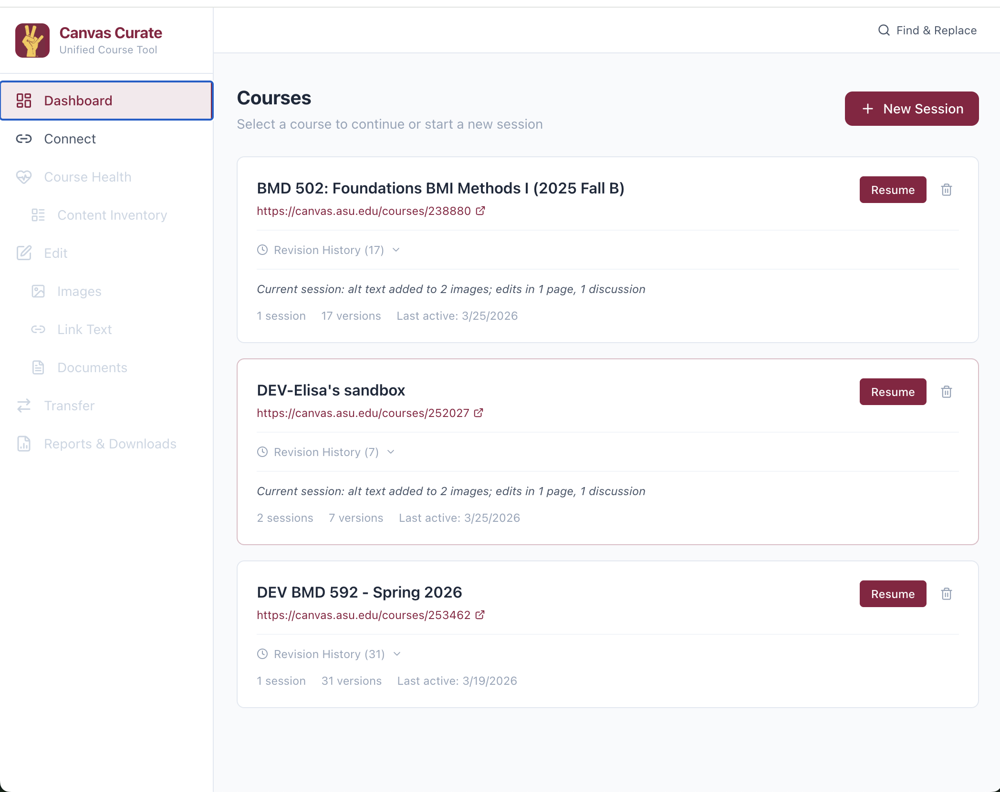
Dashboard — every connected Canvas course, with session state, revision history, and resume-where-you-left-off.
A collaborative build
Canvas Curate is a team effort. It's been built in tight collaboration with engineering and instructional design partners at ASU Online — pairing accessibility expertise, LMS workflow knowledge, and full-stack development. My contributions focus on the instructional-design side: shaping the accessibility audit flow, the AI-generated alt text and rubric pipelines, the Create workflow for turning Word and PDF source docs into Canvas-ready courses, and usability testing with real faculty.
The tool is the direct product of dozens of touch-base meetings, pairing sessions, merge reports, and user-feedback cycles — documented transparently in the repo (handoff docs, merge reports, fix logs, planning notes) so every design decision is traceable.
Connect to any Canvas course
A session starts by connecting to an existing Canvas course — pick from a searchable list, pull the full content tree in one call, and the workspace takes over from there.
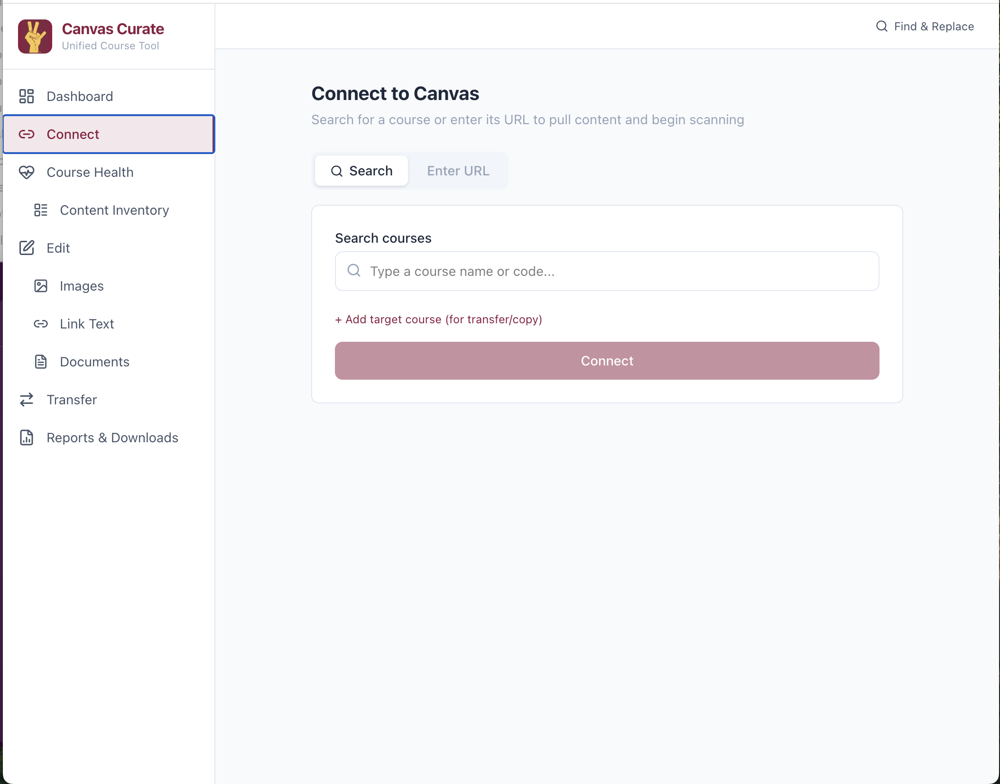
Connect — search Canvas by name or ID, pull the full course tree into a session.
Course Health — every issue in one place
Instead of clicking through pages one at a time, Course Health surfaces every accessibility, content, and orphan-file issue at a glance — with callouts for documents that need remediation, images missing alt text, and link text that's raw or generic.
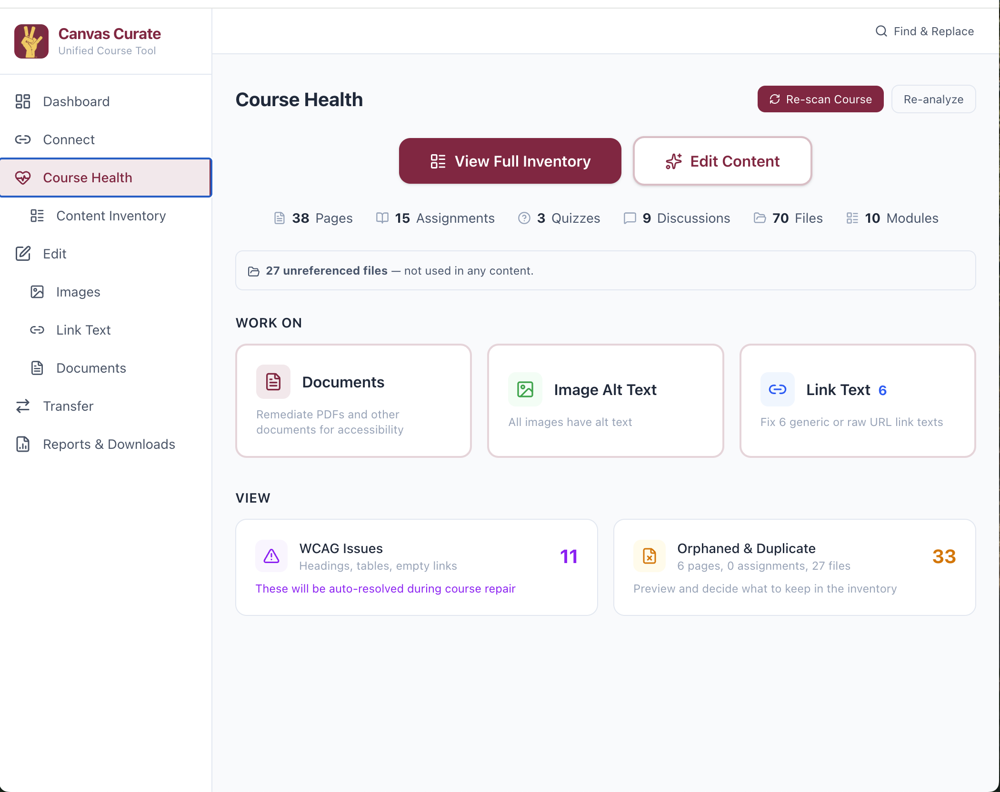
Course Health — content counts, accessibility work-on queues, and orphan/duplicate inventory.
What it does
Curate
Connect to an existing Canvas course, pull every page, assignment, discussion, quiz, file, and module into a single workspace. Run a WCAG 2.1 audit against the full course. Edit content inline in a rich-text editor with accessibility linting. Push changes back to Canvas when ready — with a diff view that shows exactly what changed before you commit.
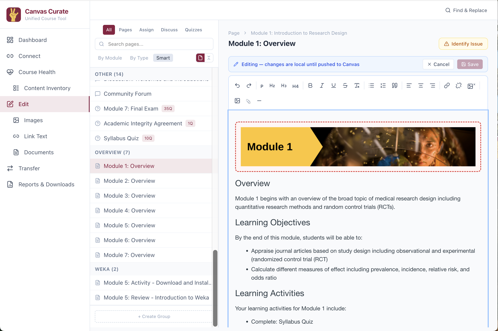
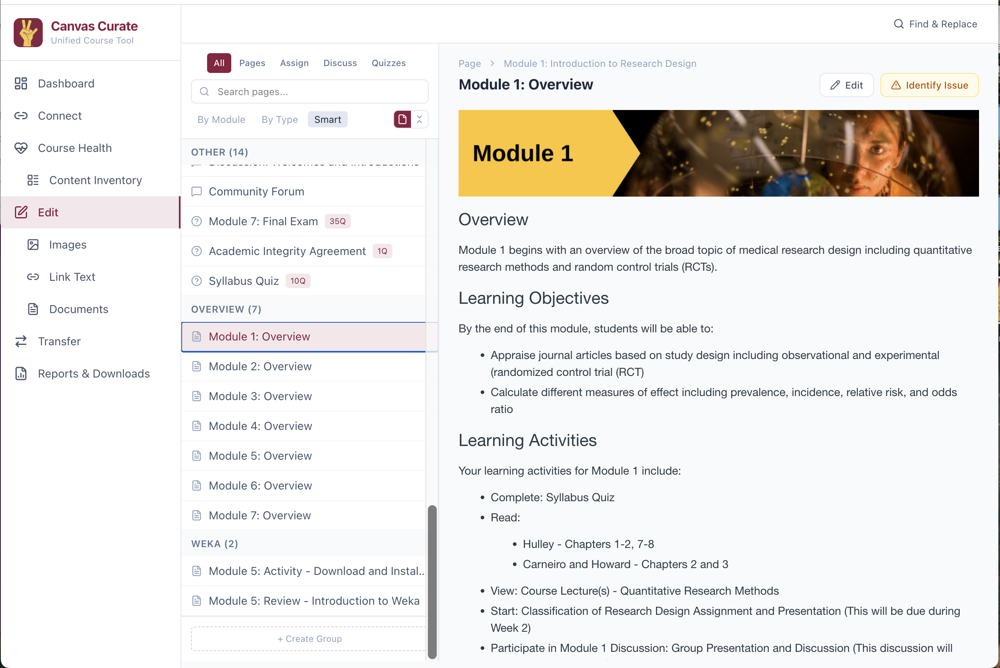
Edit any page inline, preview the student-facing render, and push back to Canvas only when you're ready.
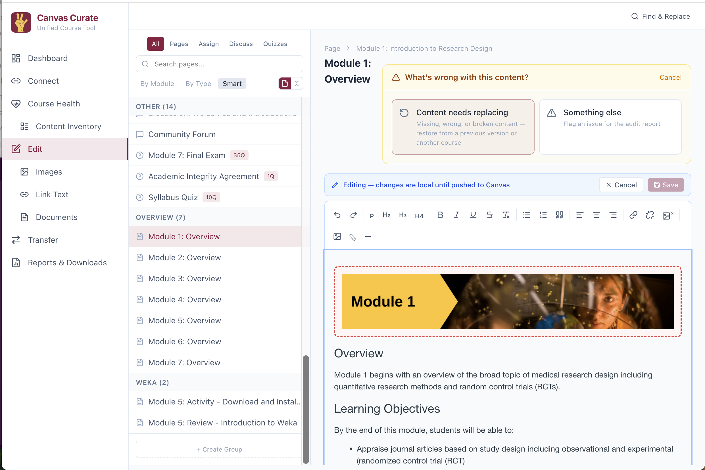
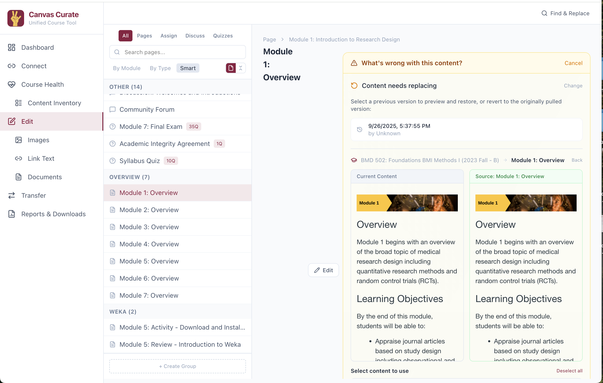
Flag issues as you edit, and compare the original Canvas content to the remediated version side-by-side.
Content Inventory
A full, filterable inventory of everything in the course — pages, assignments, files, quizzes, discussions. Find orphans (files or pages not referenced anywhere) and decide whether to delete, archive, or re-link them before they become an accessibility or navigation problem for students.
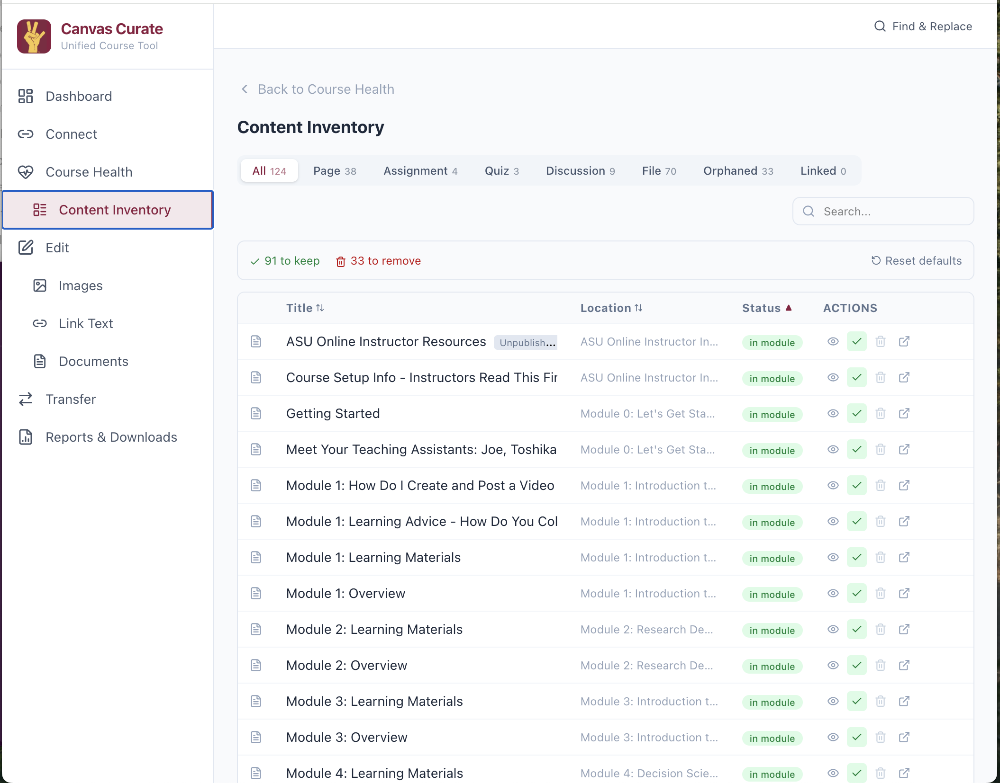
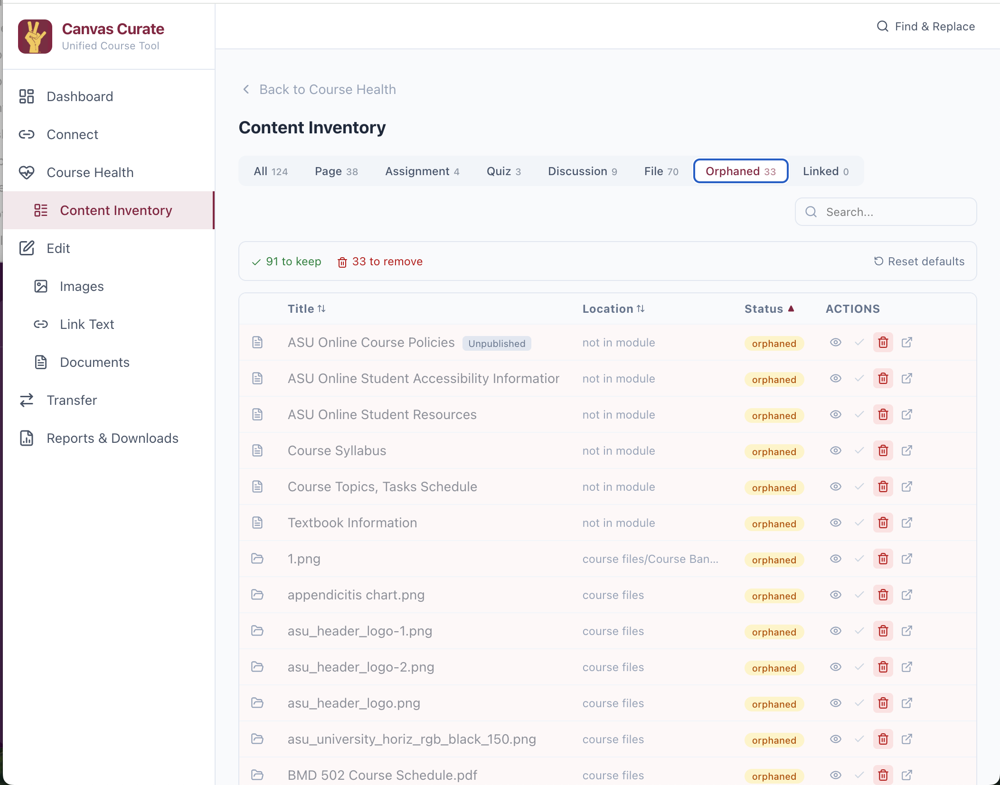
Left: full content inventory. Right: orphaned files, surfaced for a deliberate keep / delete / relink decision.
Accessibility is not an afterthought
Accessibility runs through every surface of the tool rather than being bolted on at the end:
- WCAG 2.1 audits are first-class — run against pulled Canvas content, with every issue linked to the source element and a queue for working through them in one pass.
- A11y Lint Panel flags issues in the rich-text editor as the author types — heading order, alt text, link text, color contrast, table headers.
- AI Vision Panel inspects images in context and proposes alt text tied to what's actually happening in the image, not generic filler.
- Ally API integration brings ASU's institutional accessibility engine into the workspace.
- TagFlow turns PDF structural tagging from a specialist task into a visual drag-and-draw workflow — instructional designers, not just a11y specialists, can ship tagged PDFs.
- Remediation queues let a designer work through all issues across a course in one focused pass, rather than jumping between Canvas pages one at a time.
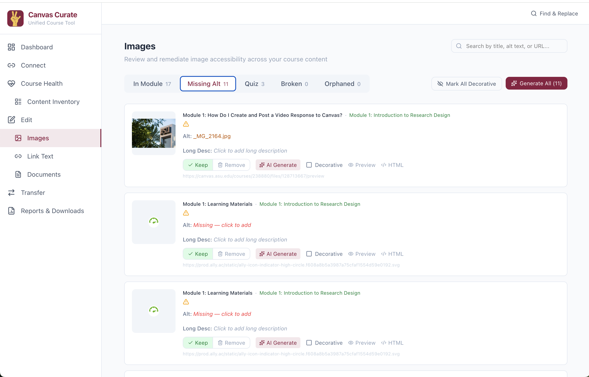
Images — filter to Missing Alt, mark decorative in bulk, or click "AI Generate" to draft contextual alt text one at a time or for the full batch.
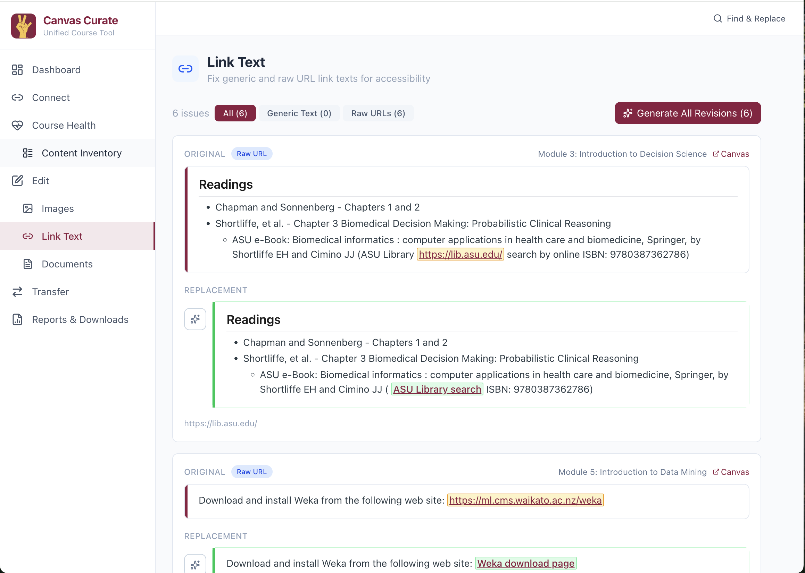
Link Text — raw URLs and generic "click here" links surfaced for bulk remediation with descriptive alternatives.
TagFlow — visual PDF remediation
PDFs are one of the most stubborn accessibility problems in higher ed. TagFlow makes tagging approachable: draw zones directly on the page preview for headings, paragraphs, figures, and tables; TagFlow assembles the tag tree, reading order, and export-ready tagged PDF for you. What used to demand Adobe Acrobat Pro and a lot of patience becomes a focused, visual workflow.
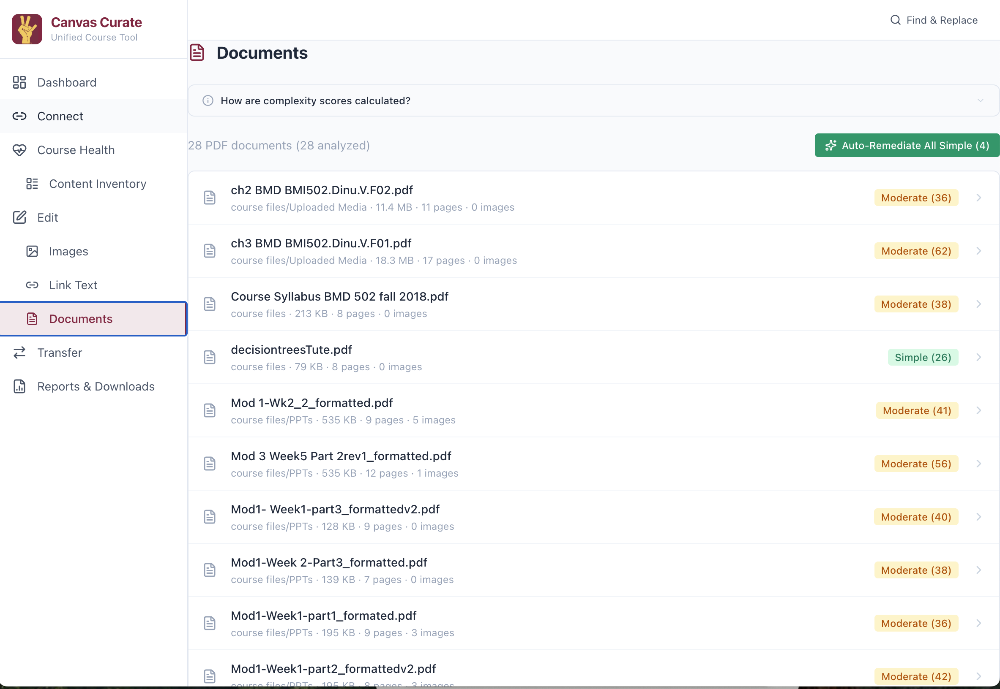
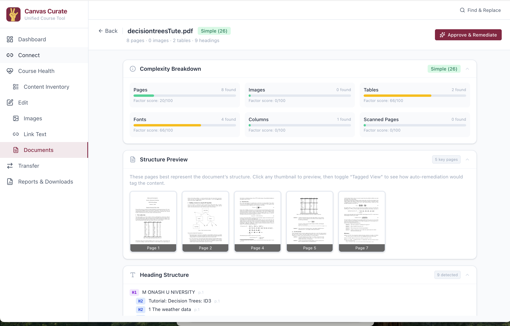
PDFs are triaged by complexity — heavier, more complex documents surface first so remediation time goes where it matters.
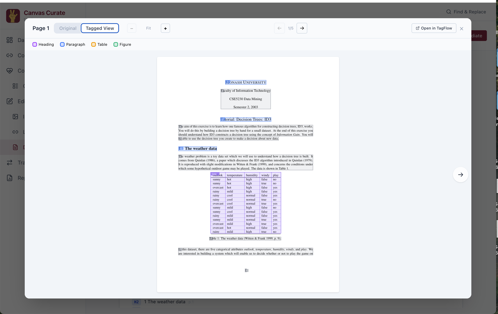
TagFlow preview — structural zones overlaid directly on the PDF page.
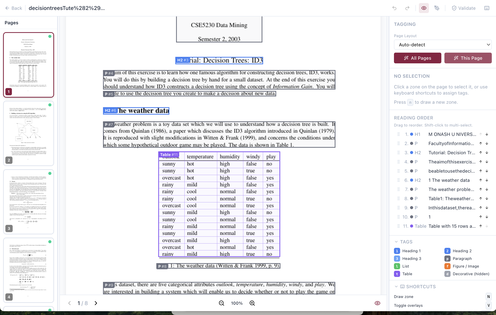
Full TagFlow workspace — reading-order list on the right, tag palette and draw-zone shortcuts, live-tagged page in the center.
Time it saves instructional designers
- Course audits: what used to take a day of page-by-page checking with separate tools now runs as a single pull + audit, with every issue linked to the source element.
- Alt text at scale: batch generation means an entire course of 200+ images can be drafted in minutes, with a reviewer pass instead of a from-scratch authoring pass.
- Course creation: uploading a Word syllabus + faculty notes produces a structured Canvas course skeleton immediately — modules, pages, assignments pre-scaffolded against a template.
- PDF remediation: TagFlow cuts out the Acrobat tag-tree learning curve; a designer can remediate a study guide in the same session they receive it.
- Content transfers: the broken-link repair and image-sibling fixes eliminate the post-migration cleanup that otherwise eats hours per course.
- Faculty review: reviewers get a focused audit spreadsheet instead of ad-hoc email threads, and feedback flows straight back into the tool.
Transfer & push
Copy content between two Canvas courses using Canvas's native content migration API — with the broken-link and image-sibling repair that IDs actually need after a transfer, not just a raw copy. Fine-grained push controls let you send only the sections you've edited back to Canvas.
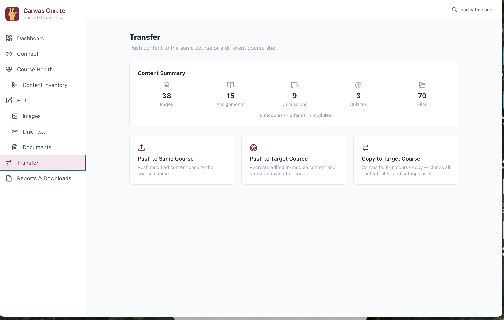
Transfer & push — choose exactly what to migrate, with built-in link repair.
Reports
Download audit results and faculty review spreadsheets as Excel files, ready to share with department leads, course owners, and QA reviewers.
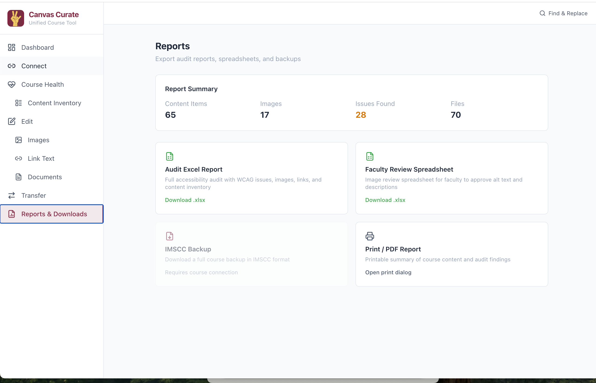
Reports & Downloads — audit results and faculty review sheets exported as shareable Excel files.
Technical foundation
- Frontend — React 19 + TypeScript, Vite, Tailwind, Zustand for state, Tiptap for rich-text editing (with ~12 custom extensions: accordions, callouts, resizable images, HTML embed blocks).
- Backend — FastAPI (Python 3) with a hand-built Canvas REST client that handles pagination, retries, and rate limits against Canvas v1.
- Storage — Cloudflare R2 for session state and files, Supabase Postgres for users and roles.
- Auth — Google OAuth via Supabase, HS256 JWTs (7-day expiry).
- AI routing — Tiered provider strategy: ASU AIML Platform (Claude Sonnet) → Anthropic Claude API → local Ollama as fallback, so the tool keeps working even if a provider is down or a user is air-gapped.
- Accessibility engine — Ally API v1 for institutional-grade audits.